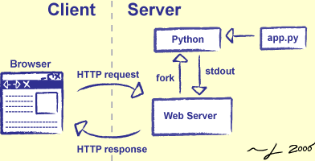

lab 1 Client-Server Model
Goals
- To understand what the server-client model is
- Write your first server in flask
What is a server?
It’s a computer than can handle requests.
What is a client?
It’s a computer that makes requests
So they’re both computers
Yes. A server can be a client and a client can be a server. Take your macbook for instance. Your macbook can be a server to itself, and we’ll see that soon!
What is the client-server model?

Here we can see a client making a request for a website. The code for the website is located in a server somewhere in Menlo Park, California. The code runs, and we return some html and CSS.